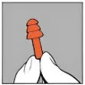
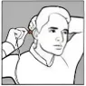
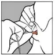
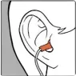
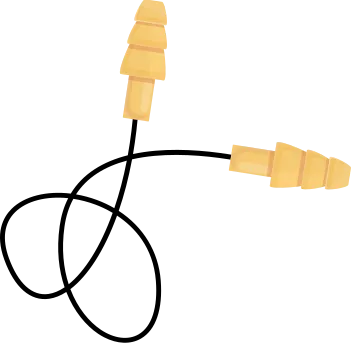

Introdução
Você está aprendendo este conteúdo para garantir a proteção da saúde auditiva, a fim de não desencadear ou agravar perdas auditivas relacionadas ao trabalho.
Você vai aprender:
- História do Equipamento de Proteção Auditiva (EPA);
- O que são os Equipamentos de Proteção Auditiva (EPAs);
- Conhecendo o risco ruído e limites de tolerância;
- Efeitos do ruído na saúde auditiva e geral;
- Conhecendo a audição;
- Quais são os tipos de EPA;
- Maneiras corretas de utilização do EPA (manutenção, guarda, higienização e identificação do EPA adequado para sua orelha).
A aplicação de todo esse conteúdo deverá ocorrer durante a sua jornada de trabalho. Por meio das capacitações, você poderá aplicar em sua rotina laboral a melhor maneira de utilização do EPA para prevenção da perda auditiva.
História do protetor auditivo
Os protetores auditivos, na forma de dispositivos projetados especificamente para proteger os ouvidos contra ruído, têm uma história que remonta a várias décadas. Embora protetores auditivos rudimentares possam ter sido utilizados desde tempos antigos, os dispositivos modernos, conforme conhecemos hoje, começaram a ser desenvolvidos mais intensivamente a partir do final do século XIX e início do século XX.
Durante a Primeira Guerra Mundial, por exemplo, os soldados começaram a utilizar protetores auriculares improvisados, geralmente feitos de algodão ou cera, para proteger seus ouvidos dos sons explosivos das armas. No entanto, a fabricação em massa e o desenvolvimento mais formal de protetores auditivos como dispositivos de proteção auditiva ocorreram nas décadas seguintes.
Ao longo do século XX e início do século XXI, houve avanços significativos na tecnologia de proteção auditiva, resultando em uma ampla variedade de protetores disponíveis atualmente, incluindo protetores auriculares de espuma, protetores auriculares moldáveis, protetores eletrônicos e até protetores personalizados.
A criação do protetor auditivo moderno e sua evolução ao longo do tempo foram impulsionadas pela crescente conscientização sobre a importância da proteção auditiva e dos efeitos prejudiciais do ruído excessivo na saúde auditiva.
O que são equipamentos de proteção auditiva (EPAs?)
Conhecendo o risco ruído e limites de tolerância
A intensidade do som está relacionada com a amplitude. Som mais forte (maior intensidade) tem maior amplitude e som mais fraco (menor intensidade) tem menor amplitude.
Fatores que influenciam na perda da audição devido ao ruído
-
1. Tempo de exposição:
quanto maior esse tempo, maior o perigo.
-
2. Tipo de ruído:
contínuo (ocorre sem parar), intermitente (ocorre de vez em quando) ou de impacto (ocorre de repente).
-
3. Lesões na orelha:
causadas por problemas de infecções e inflamações.
-
4. Sensibilidade individual:
varia de acordo com a idade e com a resistência do organismo de cada pessoa.
-
5. Distância da fonte ruidosa:
quanto mais próximo, maior o perigo.
-
6. Intensidade:
quanto maior a intensidade, maior o risco para o trabalhador.
Limites de tolerância do ruído
Legislação trabalhista
NR 15 - ATIVIDADES E OPERAÇÕES INSALUBRESANEXO N.º 1LIMITES DE TOLERÂNCIA PARA RUÍDO CONTÍNUO OU INTERMITENTE
| NÍVEL DE RUÍDO | MÁXIMA EXPOSIÇÃO DIÁRIA PERMISSÍVEL |
|---|---|
| 85 | 8 horas |
| 86 | 7 horas |
| 87 | 6 horas |
| 88 | 5 horas |
| 89 | 4 horas e 30 minutos |
| 90 | 4 horas |
| 91 | 3 horas e 30 minutos |
| 92 | 3 horas |
| 93 | 2 horas e 40 minutos |
| 94 | 2 horas e 15 minutos |
| 95 | 2 horas |
| 96 | 1 hora e 45 minutos |
| 98 | 1 hora e 15 minutos |
| 100 | 1 hora |
| 102 | 45 minutos |
| 104 | 35 minutos |
| 105 | 30 minutos |
| 106 | 25 minutos |
| 108 | 20 minutos |
| 110 | 15 minutos |
| 112 | 10 minutos |
| 114 | 8 minutos |
| 115 | 7 minutos |
Efeitos do ruído na saúde auditiva geral
O excesso de ruído afeta o trabalhador em vários aspectos. No entanto, a única doença específica associada à exposição ao ruído alto, ou seja, acima dos limites de tolerância, é a perda auditiva. Alguns fatores como frequência do ruído, intensidade, duração, ritmo, tempo de exposição, suscetibilidade individual e a atitude de cada indivíduo diante do som são primordiais para a ocorrência e o desencadeamento da perda auditiva provocada pelo ruído.
Além da perda auditiva, o ruído pode perturbar o trabalho, o descanso, o sono e a comunicação nos seres humanos. Pode prejudicar a audição e causar ou provocar reações psicológicas e fisiológicas.
O excesso de ruído também contribui para o aparecimento dos efeitos extra-auditivos, que interferem diretamente na saúde geral do trabalhador, como problemas de cansaço/estresse, irritação, ansiedade, nervosismo, falta de concentração, depressão, falta de atenção, problemas gastrointestinal, como queimação no estômago, e prisão de ventre, distúrbios de comunicação, além de insônia, como dificuldade para iniciar o adormecimento e de despertares frequentes.
Dessa maneira, podemos refletir sobre a problemática dos efeitos do ruído no corpo humano, a qual deve ser vista não somente no meio industrial, mas na comunidade em geral, servindo como alerta para todas as pessoas, principalmente moradores das grandes cidades, onde observa-se, cada vez mais, o aumento da poluição sonora.
Clique nos ícones para saber mais
Conhecendo a audição
Equipamento de proteção auditiva (EPA)
Os Equipamentos de Proteção Auditiva (EPAs) são aprovados para proteção do sistema auditivo do usuário contra níveis de pressão sonora superiores ao estabelecido na NR 15 (anexos I e II).
Os protetores auditivos devem ser utilizados durante todo o tempo que estiver exposto ao risco. De acordo com a Norma Regulamentadora 06., item 6.5 - Responsabilidades da organização:
6.5.1 Cabe à organização, quanto ao EPI:
Interaja com os ícones para saber mais
6.6 Responsabilidades do trabalhador
6.6.1 Cabe ao trabalhador, quanto ao EPI:
Tipos de protetores auditivos
Protetores auriculares de espuma
Feitos de espuma moldável e de fácil aplicação, são inseridos no canal auditivo e se expandem para formar um selo que bloqueia o ruído. São descartáveis e oferecem uma boa proteção em uma variedade de ambientes.
Protetores auriculares de silicone
Protetores auditivos do tipo inserção, confeccionados em material de silicone ou copolímeros, podem ter tamanho único ou três tamanhos, moldáveis a diferentes canais auditivos com apoio dos flanges flexíveis, proporcionam conforto e vedação e fácil colocação. São reutilizáveis e, portanto, devem ser higienizados.
Protetores auditivos tipo concha
Proporcionam atenuação uniforme nas duas conchas. Possuem modelos variados para proporcionar diversos níveis de atenuação e diferentes opções de haste para favorecer a compatibilidade com outros EPAs. Alguns modelos possuem peças de reposição.
Modo de utilização dos EPA
Como colocar o protetor de espuma moldável
Como colocar o protetor tipo plug
-

Com as mãos limpas, segure o protetor pela haste.
-

Para facilitar a inserção do protetor, puxe a orelha na diagonal para cima e para trás.
-

Insira o protetor até o fundo da orelha (canal auditivo), de forma que não gere desconforto.
-

Pronto, o protetor deverá estar vedado dentro da orelha.
Cuidados e conservação do protetor tipo PLUG
-
Higienizá-lo diariamente com água morna e sabão neutro.
-
Colocá-lo para secar à sombra em local ventilado.
-
Armazená-lo em bolsa, sacola ou caixa apropriada.
-
Mantê-lo sempre limpo e em boas condições de uso.
-
Não manuseá-lo com as mãos sujas. O equipamento não deve ter contato com álcool ou outros solventes químicos.
-
Quando não utilizado, conservá-lo na caixa, livre de contatos com sujeira e produtos químicos.
-
PERIODICIDADE DE TROCA: Deverá ser substituído a cada três meses, independentemente da frequência de utilização.
Atenção
-
Reinserir protetores auditivos sujos em suas orelhas pode causar desconforto e/ou irritação da pele no canal auditivo.
-
Não utilize cremes ou loções para as mãos imediatamente antes de inseri-los no canal auditivo, pois esses produtos podem danificar os protetores. Sempre lave e enxágue as mãos antes de colocar os protetores auditivos.
-
Troque os protetores auditivos quando estiverem de tal forma sujos que seja impossível limpá-los utilizando apenas métodos convencionais de lavagem com água e sabão neutro.
-
Observe se os protetores não se encontram danificados antes de cada uso. Se observar algum corte ou outro dano, jogue os protetores fora e substitua-os.
Como colocar o protetor tipo concha
-
Alinhe a altura das conchas de acordo com o tamanho da cabeça, de modo que as conchas cubram completamente o ouvido.
-
Retire o excesso de cabelo que fica entre o abafador e a orelha.
-
Certifique-se de que a vedação esteja satisfatória, sem a interferência de objetos como elásticos de respiradores ou armações de óculos. A orelha deve estar sempre solta dentro do círculo interno da concha. Evite que ela esteja presa ou pressionada pela almofada.
-
As conchas devem ficar alinhadas verticalmente para proporcionar melhor vedação. Nunca use com as conchas viradas para trás.
Cuidados e conservação do protetor tipo concha
-
Lavar quando necessário com água morna e sabão neutro.
-
Colocar para secar à sombra em local ventilado.
-
Armazenar em bolsa, sacola ou caixa apropriada.
-
Mantenha o protetor auricular sempre limpo e em boas condições de uso.
-
Não manusear com as mãos sujas. O equipamento não deve ter contato com álcool ou outros solventes químicos.
-
Quando não utilizado, conservar na caixa ou local apropriado, livre de contato com sujeira e produtos químicos.
Atenção
-
Deverá ser substituído quando apresentar avarias ou qualquer tipo de dano que possa prejudicar a proteção do usuário.
-
A vida útil varia de acordo com as condições de uso e higiene.
Referências
- Norma Regulamentadora No. 7 (NR-7) — Ministério do Trabalho e Emprego (www.gov.br)
- Norma Regulamentadora No. 15 (NR-15) — Ministério do Trabalho e Emprego
- Norma Regulamentadora No. 6 (NR-6)
- RUÍDO : EFEITOS EXTRA-AUDITIVOS NO CORPO HUMANO
- Cartilha de proteção auditiva 3M
- Rev. CEFAC 18 (3) • May-Jun 2016; SciELO - Brasil - Equipamento de proteção individual auricular: avaliação da efetividade em trabalhadores expostos a ruído Equipamento de proteção individual auricular: avaliação da efetividade em trabalhadores expostos a ruído